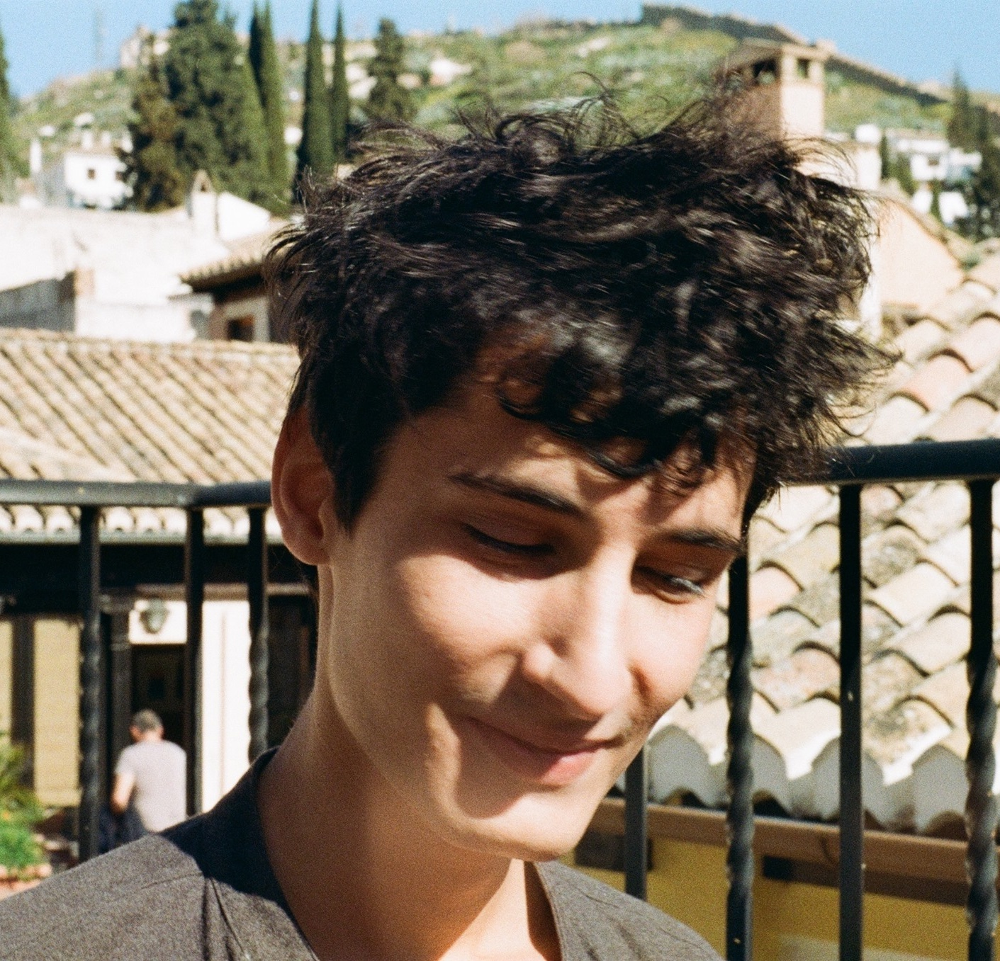

Tristan is a PhD candidate in digital art history at the University of Cambridge. He is working on 19th century textile patterns in Great Britain, their diversification and diffusion through the Jacquard loom and grammars of ornaments. He is also interested in the epistemology, and long historiography of digital art history – in particular, its links with formalism and structuralism.